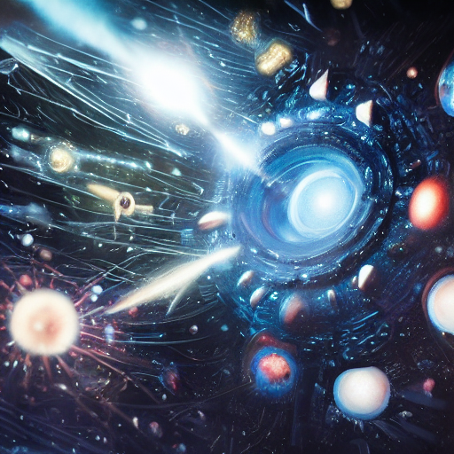

TSD SCP Foundation Documents
A collection of SCP Foundation documents concerning TSD
Abilities of The Supreme Director

TSD's capabilities, their features, and their drawbacks
The Legend of The Supreme Director
Catch up on your TSD lore, this is his backstory
TSD: A Being of Extraordinary Reality Manipulation Abilities
ChatGPT writes a paper about The Supreme Director
The Problem With Multiple The Supreme Directors
Why can't we have cool AU versions of TSD from the multiverse?